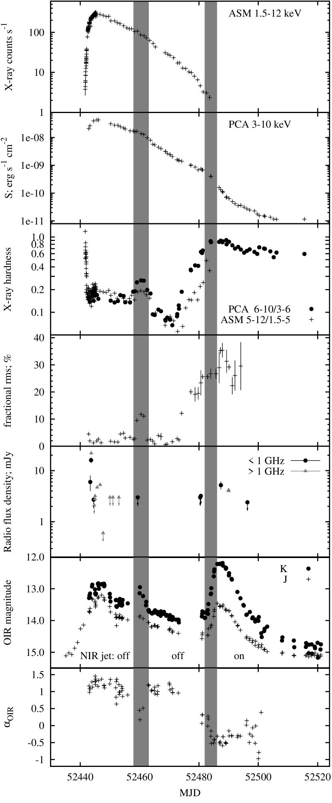
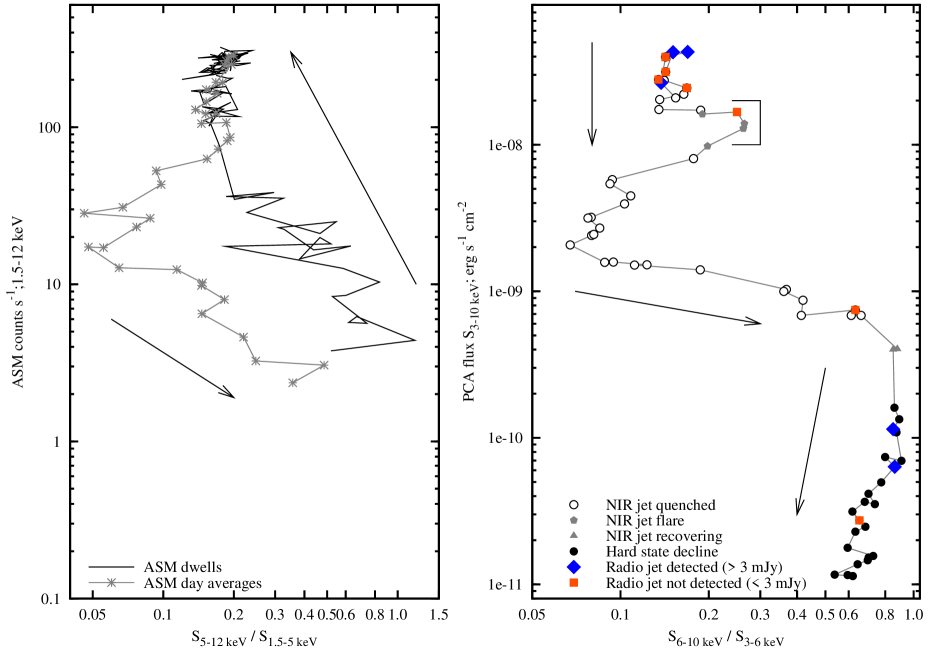
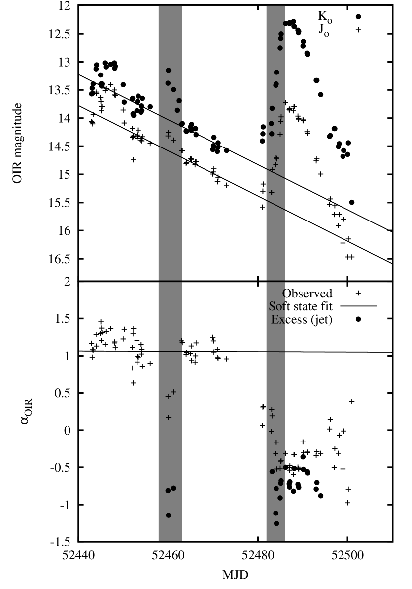
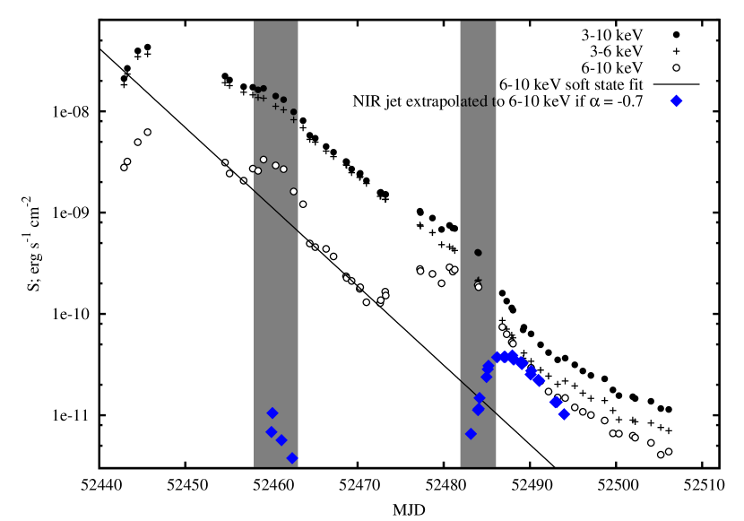
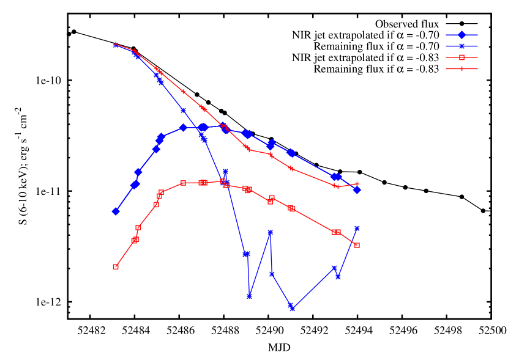
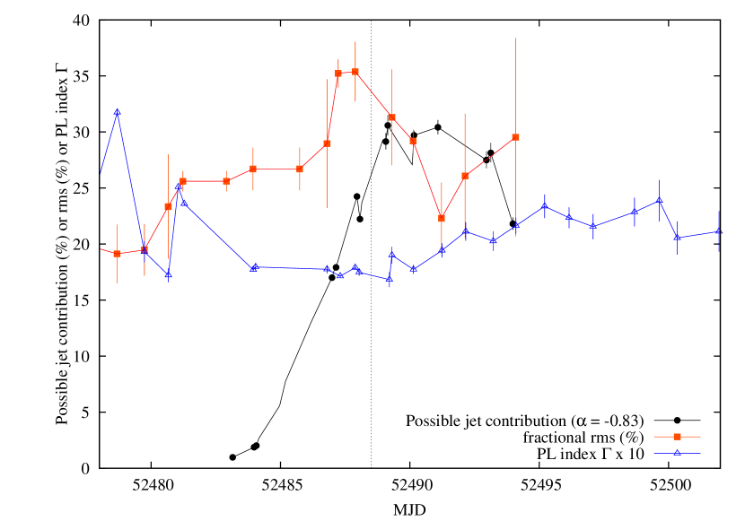

ظهور نفاثة مدمجة في الحالة اللينة–المتوسطة للمصدر 4U 1543–47
الملخص
أتاحت التطورات الحديثة في فهم اقتران النفاثة–القرص في ثنائيات الأشعة السينية المرشحة لاحتواء ثقوب سوداء (BHXBs) روابط وثيقة بين انبعاث النفاثات الراديوية والسلوك الطيفي والتغيّري في الأشعة السينية. ففي حالات الأشعة السينية «اللينة» تُخمَد النفاثات، غير أن الصورة الحالية تفتقر إلى فهم خصائص الأشعة السينية المرتبطة بإخماد هذه النفاثات أو عودتها. نبيّن هنا أن ازدياداً قصيراً في السطوع تحت الأحمر (IR)، مدته يوم، خلال حالة أشعة سينية يغلب عليها الطابع اللين في المصدر BHXB 4U 1543–47، تزامن مع تذبذب شبه دوري قوي من النوع B في الأشعة السينية (QPO)، ومع تصلّب طيفي طفيف وزيادة في التغيّر rms، مما يشير إلى انتقال عابر إلى الحالة اللينة–المتوسطة (SIMS). ويتوافق هذا «التوهج» تحت الأحمر مع معامل طيفي لانبعاث سنكروتروني رقيق بصرياً، ويرجح أنه ينشأ من النفاثة المستقرة المدمجة. وعادة لا ترتبط هذه النفاثة المركزية المشعة في تحت الأحمر إلا بالحالة الصلبة، ومن ثم فإن ظهورها خلال SIMS يضع «خط النفاثة» بين SIMS والحالة اللينة في مخطط الصلادة–الشدة لهذا المصدر. وينتج الانبعاث تحت الأحمر في منطقة صغيرة من النفاثات قريبة من موضع انطلاقها ( ثانية ضوئية)، كما أن المقياس الزمني للتوهج تحت الأحمر في 4U 1543–47 أطول بكثير من أن ينجم عن قذف منفرد ومتقطع. ونقدّم أيضاً ملخصاً لتطور خصائص النفاثة والخصائص الطيفية/التغيّرية في الأشعة السينية على امتداد الفوران كله، مقيدين مساهمة النفاثة في فيض الأشعة السينية أثناء الاضمحلال.
keywords:
التراكم، أقراص التراكم، فيزياء الثقوب السوداء، الأشعة السينية: الثنائيات، الوسط بين النجمي: النفاثات والتدفقات الخارجة، النجوم: أفراد: 4U 1543–471 مقدمة
يمكن للمادة المتراكمة على ثقب أسود (BH)، في بعض الظروف، أن تنتج تدفقات خارجة مصطَفّة تتسارع إلى سرعات نسبية. وتُعد هذه الظروف، أي الشروط الفيزيائية اللازمة لانطلاق هذه النفاثات، موضوعاً ساخناً للنقاش في فيزياء التراكم. وفي الثقوب السوداء ذات الكتلة النجمية التي تتراكم من نجم في نظام ثنائي (ثنائيات الأشعة السينية للثقوب السوداء؛ BHXBs)، أدت الجهود الحديثة إلى ظهور اقترانات شاملة بين التدفق الداخل المتراكم والتدفق الخارج. وبصورة أكثر تحديداً، وُجد أن فيض النفاثات في الراديو وتحت الأحمر يرتبط طردياً بفيض الأشعة السينية (Corbel et al., 2000, 2003; Gallo, Fender & Pooley, 2003; Homan et al., 2005; Russell et al., 2007; Coriat et al., 2009; Gallo et al., 2014; Vincentelli et al., 2018)، على نحو تتوقعه نظريات إنتاج النفاثات في الثقوب السوداء المتراكمة (Falcke & Biermann, 1995; Heinz & Sunyaev, 2003; Körding, Fender & Migliari, 2006). غير أنه اكتُشف أيضاً أن النفاثات تُخمَد، وربما تغيب، في بعض أنظمة حالات التراكم (التي تكشف عن نفسها تجريبياً بوصفها حالات أشعة سينية تُعرّف بخصائصها الطيفية والتغيّرية؛ انظر Belloni, 2010, والمراجع الواردة فيه)، وتحديداً في حالات الأشعة السينية اللينة (أي حالات الأشعة السينية اللينة؛ مثل Fender et al., 1999; Coriat et al., 2011; Russell et al., 2011, 2019). وقبل هذا الإخماد للنفاثات غالباً ما تُرصد توهجات راديوية ساطعة، تُفصل أحياناً إلى قذائف منفصلة (مثل Brocksopp et al., 2002; Miller-Jones et al., 2012; Rushton et al., 2017). ويمكن نمذجة منحنيات الضوء متعددة النطاقات لهذه التوهجات لاستخراج طاقات القذائف وسرعاتها (مثل Tetarenko et al., 2017; Fender & Muñoz-Darias, 2016; Fender & Bright, 2019).
حاول Fender, Belloni & Gallo (2004، ويشار إليه فيما يلي بـ FBG04) تقديم أول صورة موحدة للنفاثات في BHXBs، فوجدوا أن معظم المصادر تتبع نمطاً محدداً يرتبط فيه السلوك الراديوي باللمعان وبالحالة الطيفية في الأشعة السينية (انظر أيضاً Miyamoto et al., 1995; Maccarone & Coppi, 2003). وتبين أن القذفات الساطعة وما يليها من إخماد للنفاثة يحدثان في المنطقة نفسها تقريباً من مخطط صلادة الأشعة السينية–شدتها (HID) في كل فورانات BHXB المعروفة؛ أي عند الانتقال بين الحالة الصلبة والحالة اللينة (FBG04). ووسّع Fender, Homan & Belloni (2009, ويشار إليهم فيما يلي بـ FHB09) ذلك ليشمل السلوك الزمني، فوجدوا أن أسطع قذفات النفاثات المنفصلة حدثت خلال الحالة اللينة–المتوسطة (SIMS)، وهي «منطقة» rms منخفضة (انظر أيضاً Belloni, 2010; Motta, 2016; Fender & Muñoz-Darias, 2016)، وترتبط بالتذبذبات شبه الدورية (QPOs).
ومع ازدياد ليونة طيف الأشعة السينية عبر الانتقال، تتغير الخصائص الزمنية تغيراً كبيراً. وباعتماد تصنيفات الحالة في Belloni (2010)، يدخل BHXB عادة الحالة الصلبة–المتوسطة (HIMS) في بداية الانتقال، وفيها ينخفض مقدار التغيّر الكسري rms وتظهر QPO قوية متمركزة عند – 15 Hz (وهي QPO من النوع C؛ Casella, Belloni & Stella, 2005). ويرتبط الانتقال إلى HIMS أيضاً بخفوت الانبعاث تحت الأحمر من النفاثة (مثل Homan et al., 2005; Coriat et al., 2009; Baglio et al., 2018)، في حين يستمر الانبعاث الراديوي بطيف مسطح (FHB09؛ Miller-Jones et al., 2012; van der Horst et al., 2013). ويواصل المصدر ازدياد ليونته ويدخل SIMS، كما يتضح من هبوط مفاجئ في rms الكسري، ومن ظهور QPO من النوع B (عند 5 – 6 Hz) و/أو QPO من النوع A (عند 8 Hz).
لقد ثبت أن الكسر الطيفي للنفاثة، من سنكروترون مسطح/ممتص ذاتياً جزئياً إلى سنكروترون رقيق بصرياً، يقع في نطاق تحت الأحمر في الحالة الصلبة (Corbel & Fender, 2002; Gandhi et al., 2011; Russell et al., 2013a). وينتقل هذا الكسر إلى ترددات أدنى، أي إلى نطاق المليمتر والراديو، أثناء الانتقال عبر HIMS إلى SIMS، ثم يعود إلى تحت الأحمر عند الرجوع إلى الحالة الصلبة (van der Horst et al., 2013; Corbel et al., 2013; Kalemci et al., 2013; Russell et al., 2013b, 2014; Baglio et al., 2018)، كما توجد علاقة ترابط بين صلادة الأشعة السينية وتردد كسر النفاثة (Koljonen et al., 2015). وتُرصد التوهجات الراديوية، وهي رقيقة بصرياً، عبر الانتقال إلى SIMS، وأثناء SIMS، وعبر الانتقال من SIMS إلى الحالة اللينة، و/أو أثناء الانتقال من الحالة اللينة إلى الحالة «فائقة الليونة» (مثل FHB09؛ Kalemci et al., 2016; Russell et al., 2019).
أما الزمن الدقيق لإخماد النفاثة الراديوية المركزية فغير واضح، لأن الانبعاث الراديوي الساطع قد ينجم عن تصادمات بين قذائف منفصلة والبيئة المحيطة أو النفاثة الأبطأ في الحالة الصلبة (انظر المناقشة في Russell et al., 2019). وإذا أمكن رصد إخماد النفاثة المركزية نفسها أو عودتها، مع مراقبة متزامنة للأشعة السينية، فسيحدد ذلك الموضع الدقيق لـ «خط النفاثة» في HID. وستلقي التغيرات في خصائص الأشعة السينية المرتبطة بهذا الأمر ضوءاً على العملية الفيزيائية التي تمنع إنتاج النفاثات في الثقوب السوداء المتراكمة.
نبلغ هنا عن اكتشاف نفاثة مدمجة في SIMS، متزامنة مع QPO من النوع B، في المصدر BHXB 4U 1543–47 خلال فورانه في 2002. وتستند النتيجة إلى أرصاد متعددة الأطوال الموجية؛ إذ رُصد الفوران على نطاق واسع في الأشعة السينية، والأطوال الموجية البصرية/تحت الحمراء (OIR)، والراديو.

4U 1543–47 (IL Lup) هو BHXB عابر (Orosz et al., 1998) شهد أربعة فورانات منذ اكتشافه في 1971 (Matilsky et al., 1972; Kitamoto et al., 1984; Buxton & Bailyn, 2004). وتبلغ المسافة إلى 4U 1543–47 مقدار kpc (Orosz et al., 2002). وقد حُددت الفترة المدارية بأنها ساعة، وقُدرت زاوية الميل بأنها (Orosz, 2003). وجمع Russell et al. (2006) من الأدبيات كتلة ثقب أسود مركزي قدرها وكتلة رفيق قدرها لهذا النظام (انظر أيضاً Saikia et al., 2019). ورُصد فورانه في 2002 بانتظام بواسطة القمر الصناعي للأشعة السينية Rossi X-ray Timing Explorer (RXTE؛ Park et al., 2004; Kalemci et al., 2005, 2013; Reig et al., 2006; Gierliński & Newton, 2006; Gliozzi et al., 2010; Koen, 2013; Morningstar & Miller, 2014; Dinçer et al., 2014; Lipunova & Malanchev, 2017; Vahdat Motlagh, Kalemci & Maccarone, 2019)، وبمرافق أرضية بصرية وتحت حمراء (Buxton & Bailyn, 2004) وراديوية (Park et al., 2004; Kalemci et al., 2005). ومن ثم يشكل هذا الفوران إحدى أغنى مجموعات البيانات عن التطور متعدد الأطوال الموجية لمصدر BHXB عابر. ويمثل الانبعاث السنكروتروني من النفاثات المنتجة في هذا BHXB الانبعاث الراديوي، كما وُجد أيضاً أنه يسهم في نطاق OIR (ويهيمن عليه أحياناً) (Buxton & Bailyn, 2004; Kalemci et al., 2005; Russell et al., 2007, 2013a).

2 جمع البيانات
توجد كل البيانات متعددة الأطوال الموجية لهذا الفوران في الأدبيات. وقد أُخذت الأرصاد الراديوية من Park et al. (2004) وKalemci et al. (2005). ورُصد المصدر عند 843 MHz باستخدام Molonglo Observatory Synthesis Telescope (MOST)، وعند 617 و1027 و1287 MHz باستخدام Giant Metrewave Radio Telescope (GMRT)، وعند 4.80 و8.64 GHz باستخدام Australia Telescope Compact Array (ATCA). وكُشف المصدر عند ترددات راديوية خلال الأسبوع الأول من الفوران وخلال اضمحلال الحالة الصلبة في المراحل المتأخرة من الفوران. واستُحصلت حدود عليا في أزمنة أخرى، وإن كان كثير منها غير مقيد بدرجة كبيرة، إذ كانت الحدود العليا النموذجية بضع mJy (للتفاصيل انظر Park et al., 2004; Kalemci et al., 2005).
مقادير نطاق (m) ونطاق (m) في تحت الأحمر القريب NIR مأخوذة من Buxton & Bailyn (2004). وفي ورقتهم، يعرض Buxton & Bailyn مراقبة في ثلاثة مرشحات بصرية (، ، ) ومرشحين في NIR (، ). وبما أننا مهتمون بمكوّن النفاثة في الانبعاث، وهو أكثر بروزاً بكثير في NIR مقارنة بالبصري، فإننا نستخدم مقادير نطاقي و في التحليل الآتي (كما أن هذين المرشحين امتلكا أكمل تغطية للفوران).
نظراً إلى أن 4U 1543–47 يحتوي نجماً ساطعاً قدره mag (Buxton & Bailyn, 2004)، فإن فيض هذا النجم يسهم إسهاماً ملحوظاً في مقادير NIR أثناء الفوران، ولا سيما عند مستويات الفيض المنخفضة في البداية والنهاية. ولذلك، لاشتقاق انبعاث NIR من تدفق التراكم (القرص والنفاثة) في هذين النطاقين الموجيين ( و)، طرحنا فيض النجم المعروف من هذه البيانات، وافترضنا أنه ثابت. وأخيراً، حُسبت الفيوض الذاتية والمعاملات الطيفية في NIR بعد إزالة الاحمرار من المقادير، باعتماد انطفاء بين نجمي مقداره (وهو محدد تحديداً جيداً نسبياً؛ Orosz et al., 1998) وقانون الانطفاء في Cardelli, Clayton & Mathis (1989).
أُخذت فيوض RXTE Proportional Counter Array (PCA) وقيم معامل فوتونات الأشعة السينية من Dunn et al. (2010). وفي بداية الفوران، راقب All-Sky Monitor (ASM) على متن RXTE الصعود السريع للفيض قبل تشغيل PCA. وأظهرت أولى أرصاد PCA أن 4U 1543–47 كان قد دخل بالفعل في انتقال نحو الحالة اللينة (مثل Reig et al., 2006)، في حين رُصد صعود الحالة الصلبة بواسطة ASM (Gierliński & Newton, 2006). لذلك ندرج بيانات ASM المتاحة للعامة. وقد راقب كل من PCA وASM تقدم الفوران طوال معظم مدته تقريباً، مع فجوات قليلة في التغطية. وأُخذت خصائص التغيّر في الأشعة السينية من RXTE PCA من Kalemci et al. (2013)؛ انظر أيضاً Dinçer et al. (2014). وكانت البيانات المدرجة في تلك الأوراق من المراحل المتأخرة للفوران؛ أما هنا فقد وسّعنا التحليل ليشمل الفوران كله (للاطلاع على تفاصيل تحليل التوقيت في الأشعة السينية، انظر القسم 2.2 من Kalemci et al., 2013). وأُخذ تصنيف QPO من Park et al. (2004) ومن Gao, et al. (2017)، ثم صُقل أكثر للأرصاد المنجزة أثناء SIMS.
3 النتائج والتحليل
3.1 التطور متعدد الأطوال الموجية للفوران
نعرض في الشكل 1 منحنيات الضوء للفوران كله عند جميع الأطوال الموجية المجموعة لهذه الدراسة. ورُسم فيض الأشعة السينية (أو معدل العد) والصلادة من RXTE ASM وPCA في اللوحات الثلاث العلوية. وتُعرض المتوسطات اليومية لـ ASM بعد MJD 52445.3. وقبل هذا التاريخ استُخدمت أرصاد ASM الفردية بسبب سرعة صعود الفوران وارتفاع نسبة الإشارة إلى الضجيج (S/N؛ إذ بلغ المصدر ذروته عند عدة ASM s-1؛ 1.5–12 keV). أما في PCA فتُعرَّف الصلادة بأنها فيض 6–10 keV مقسوماً على فيض 3–6 keV. وفي ASM هي معدل العد في 5–12 keV مقسوماً على معدل العد في 1.5–5 keV. ويُرسم منحنى ضوء التغيّر الكسري rms في الأشعة السينية في اللوحة الرابعة. وتُعرض في اللوحات الثلاث السفلية الفيض الراديوي، والقدر المرصود في OIR، والمعامل الطيفي الذاتي في NIR (منزوع الاحمرار). وتمثل المناطق الرمادية المظللة العهود (MJD 52458–52463 و52482–52486) التي توجد فيها دلائل على إخماد انبعاث النفاثة أو تعافيه في نطاق OIR (انظر أدناه).
من الواضح أن المصدر بدأ فورانه بطيف أشعة سينية صلب، كما ظهر من نسبة صلادة RXTE ASM. وبلغ فيض الأشعة السينية ذروته سريعاً وازداد ليونة، ثم بدأ لاحقاً اضمحلالاً بطيئاً، مع بقاء طيف الأشعة السينية ليناً إلى أن بدأ بالتصلب تدريجياً في منتصف الفوران (لتحليل طيفي مفصل انظر مثلاً Park et al., 2004; Kalemci et al., 2005; Reig et al., 2006; Dunn et al., 2010; Gliozzi et al., 2010; Koen, 2013; Lipunova & Malanchev, 2017). وفي الشكل 2 تبين مخططات HID للفوران في الأشعة السينية من RXTE ASM (اللوحة اليسرى) وبيانات PCA (اللوحة اليمنى) أن المصدر اتبع الحلقة المعتادة عكس اتجاه عقارب الساعة في HID، وهي شائعة في BHXBs (مثل FBG04؛ FHB09). وكان التغيّر في الأشعة السينية ضعيفاً (rms في المئة) في الحالة اللينة، ثم ازداد إلى –35 في المئة أثناء اضمحلال الحالة الصلبة.
خلال الحالات الانتقالية عند لمعان مرتفع أُبلغ عن عدة توهجات راديوية، وهي معروضة أيضاً في الشكل 1. وتُشار عهود الكشف الراديوي وعدم الكشف في HID في الشكل 2 (اللوحة اليمنى). وقد شوهدت التوهجات الراديوية الأولية في وقت كان فيه طيف الأشعة السينية ليناً إلى حد كبير بالفعل (MJD 52443.4، عندما كان معامل فوتونات الأشعة السينية –2.7؛ Park et al., 2004; Dunn et al., 2010). وأثناء الانتقال من الحالة الصلبة إلى اللينة (قرب ذروة فيض الفوران)، يكون «خط النفاثة»، حين تُطلق قذائف منفصلة ساطعة وتُخمَد النفاثة المركزية، عادة عند انتقال SIMS–الحالة اللينة أو حوله (FHB09). أما هنا، فقد كان الانتقال من الصلب إلى اللين في 4U 1543–47 سريعاً جداً، وأُخذت أولى الأرصاد الراديوية عندما كان المصدر في الحالة اللينة بالفعل. وقد تنشأ التوهجات الراديوية الساطعة في ذلك الوقت إما من النفاثة المركزية أو من صدمات في اتجاه مجرى التدفق (صدمات داخلية أو تفاعلات مع الوسط بين النجمي).
أثناء الانتقال عائداً إلى الحالة الصلبة عند لمعان أدنى، فإن موضع خط النفاثة موضع نقاش (FHB09). في 4U 1543–47، يوجد عدم كشف راديوي قبل انضمام المصدر مباشرة إلى الحالة الصلبة القانونية في HID، وأُجريت كشوف راديوية بمجرد عودة 4U 1543–47 تماماً إلى الحالة الصلبة. وهذا يعني أن «خط النفاثة» في هذا المصدر أثناء الانتقال من اللين إلى الصلب يقع عند صلادة أشعة سينية عالية نسبياً، بل ومتسق فعلياً مع الوقت الذي عاد فيه المصدر تماماً إلى الحالة الصلبة (FHB09). غير أننا نلاحظ أن الحدود العليا الراديوية البالغة mJy قبل ذلك ليست مقيدة بوجه خاص. وبالنسبة إلى 4U 1543–47 حدث هذا الازدياد الراديوي في السطوع عند نسبة صلادة في الأشعة السينية أشد صلابة بنحو أربعة أضعاف من خط النفاثة أثناء الانتقال من الصلب إلى اللين (الشكل 2، اللوحة اليمنى). وفي GX 339–4، الذي امتلك تغطية راديوية جيدة لهذا الانتقال أثناء فورانه في 2010–2011، اشتغلت النفاثة الراديوية أيضاً عندما دخل المصدر الحالة الصلبة، على نحو مشابه لـ 4U 1543–47. وفي GX 339–4 حدث ذلك قبل بضعة أيام فقط من بداية الازدياد في السطوع تحت الأحمر (Corbel et al., 2013). ومن ناحية أخرى، قد يبدو خط النفاثة عند صلادة أكثر ليونة من ذلك في بعض المصادر مثل XTE J1720–318 (انظر المناقشة في القسم 7 من FHB09). وستلزم مراقبة راديوية حساسة أثناء الانتقال من اللين إلى الصلب لتقييم متى وكيف تعود النفاثة خلال هذا الانتقال في تجميعات المصادر (انظر أيضاً Kalemci et al., 2013, للمناقشة).
نوقش تطور فيض OIR بالتفصيل في Buxton & Bailyn (2004). وفي اللوحة السفلى من الشكل 1 يُعرض المعامل الطيفي الذاتي في NIR (منزوع الاحمرار) من نطاق إلى نطاق . وطوال النصف الأول من الفوران يكون لون NIR أزرق عموماً، بمعامل طيفي نموذجي للمناطق الخارجية من قرص التراكم (الذي يرجح أنه مُشعَّع؛ Hynes, 2005; Russell et al., 2007)؛ (حيث ). وبعد أن يتصلب طيف الأشعة السينية في النصف الثاني من الفوران، يظهر ازدياد حاد في سطوع منحنيات NIR ( mag في نطاق ) وبدرجة أقل في منحنيات الضوء البصرية. وقد فُسر منشأ هذا التوهج تحت الأحمر (Buxton & Bailyn, 2004) بأنه مختلف عن الفوران الرئيس، وعلى الأرجح انبعاث سنكروتروني من النفاثة في 4U 1543–47 (انظر أيضاً Russell et al., 2007, 2013a; Kalemci et al., 2013; Dinçer et al., 2014). وباستخدام السعة البصرية يُصنف هذا الازدياد في السطوع على أنه توهج عائد وفق تصنيف Zhang et al. (2019). وينتقل المعامل الطيفي في NIR من في الحالة اللينة إلى إلى أثناء اضمحلال الفوران في الحالة الصلبة.
3.2 توهج قصير وغير متوقع في تحت الأحمر ضمن SIMS
يوجد ازدياد في سطوع فيض NIR (واحمرار في المعامل الطيفي) حول MJD 52460، استمر بضعة أيام. وهذا التوهج أسطع بكثير عند أطوال موجية تحت حمراء مقارنة بالأطوال الموجية البصرية (Buxton & Bailyn, 2004). ويصاحب التوهج تصلب وجيز في فيض الأشعة السينية وازدياد في rms إلى في المئة (الشكلان 1 و3). وقبل هذا الازدياد في سطوع NIR وبعده كان المصدر في حالة لينة. ويشير التصلب، وازدياد التغيّر في الأشعة السينية، وظهور QPO بارزة من النوع B (انظر الشكل 8(b) في Park et al., 2004) في هذا الوقت إلى أن المصدر كان في SIMS (أو «حالة قانون القدرة الحاد»، وفق تعريفات McClintock & Remillard, 2006). وتحيط المنطقة المظللة اليسرى في الشكل 1 بمجال تواريخ التوهج (MJD 52458–52463)، مما يحد مدة التوهج إلى أيام. وفي الشكل 3 نعرض هذه المنطقة من منحنيات الضوء بالتفصيل. كُشفت أولاً QPO ضعيفة من النوع A في MJD 52457 عند تردد Hz، ورُصدت مرة أخرى بخصائص مماثلة في اليوم التالي. ثم رُصدت QPO من النوع B خلال الأرصاد الثلاثة المنجزة في فترة MJD 52459–52461، المقابلة للذروة المحلية في صلادة الأشعة السينية، بتردد مركزي –8 Hz وسمات توافقية ضعيفة عند و، قبل أن تختفي في MJD 52462 (Park et al., 2004). وكان الانتقال العابر إلى SIMS قصيراً، إذ دام أيام فقط، متزامناً مع التوهج تحت الأحمر.
تُبيَّن موضع SIMS والتوهج تحت الأحمر في HID بالمنطقة ذات المربع المفتوح في الشكل 2، اللوحة اليمنى. وبلغ فيض التوهج تحت الأحمر ذروته في MJD 52460، عند كثافة فيض منزوع الاحمرار في نطاق قدرها mJy، يسهم التوهج نفسه منها بمقدار 2 mJy. وهناك رصد راديوي واحد أثناء SIMS، في MJD 52459، أعطى حداً أعلى راديوياً قدره mJy عند 843 MHz. وإذا كان هذا الانبعاث من النفاثة المدمجة، فإننا نتوقع فيضاً راديوياً mJy إذا كان الطيف مسطحاً أو مقلوباً قليلاً، ولذلك فإن الحد الأعلى الراديوي متسق مع نفاثة مدمجة. وليس مستغرباً عدم كشف الانبعاث الراديوي، إذ قد يكون للنفاثة المدمجة طيف مقلوب قليلاً من الراديو إلى تحت الأحمر؛ ففي الواقع، أثناء اضمحلال الحالة الصلبة كان الطيف الراديوي مقلوباً، مع (Kalemci et al., 2005).
إن الانبعاث الفائض في تحت الأحمر (فوق مكوّن القرص في توزيع الطاقة الطيفي)، الذي يُعزى عادة إلى انبعاث سنكروتروني من النفاثة المدمجة، يرتبط عادة بالحالة الصلبة (مثل Migliari et al., 2007; Buxton et al., 2012; Kalemci et al., 2013; Russell et al., 2006, 2013a). وعادة ما يخفت الفائض تحت الأحمر أثناء الانتقال من الحالة الصلبة إلى HIMS (مثل Coriat et al., 2009; Cadolle Bel et al., 2011; Saikia et al., 2019)، مع ظهور توهجات قصيرة إضافية في تحت الأحمر فقط قرب انتقال الصلبة–HIMS إذا لم ينجز المصدر انتقالاً سلساً (Baglio et al., 2018). وخلال SIMS والحالة اللينة يُخمَد الانبعاث تحت الأحمر مع تطور طيف النفاثة (مثل Russell et al., 2013b; Corbel et al., 2013). والاستثناء الوحيد هو رصد توهجات نفاثية قصيرة في تحت الأحمر من قذفات منفصلة في مصادر لا تسلك المسار المعتاد عبر HID، مثل GRS 1915+105 وV404 Cyg (Fender et al., 1997; Shahbaz et al., 2016). لذلك فإن التوهج تحت الأحمر في 4U 1543–47 أثناء SIMS هو أول نفاثة مدمجة تُكشف عند أطوال موجية تحت حمراء في SIMS (على حد علمنا).

3.3 فصل انبعاث قرص NIR عن انبعاث النفاثة
تُرسم منحنيات الضوء في NIR مرة أخرى في الشكل 4 (اللوحة العلوية) بعد طرح ضوء النجم الرفيق. وخلال الحالة اللينة تبدو منحنيات الضوء في NIR قابلة للتقريب باضمحلال أسي. واتباعاً لطريقة Russell et al. (2010)، نلائم هذا الاضمحلال في كل من النطاقين ونقدر الفائض فوق هذا الاضمحلال في الحالة الصلبة بعد الانتقال بطرح الضوء من استقراء هذا الاضمحلال (انظر أيضاً Dinçer et al., 2012; Russell et al., 2012). نعرّف الحالة اللينة بأنها الفترة بين MJD 52452 و52473 ونلائم هذه البيانات، مع استبعاد البيانات عند MJD 52458–52463 حين قام المصدر بالانتقال العابر القصير المذكور آنفاً إلى SIMS (انظر أيضاً الشكل 2 في Russell et al., 2013a). ونجد معدل اضمحلال في ملاءمة الحالة اللينة قدره ملي-قدر d-1 في نطاق ، و ملي-قدر d-1 في نطاق (كما تُظهره الخطوط السوداء المتصلة في الشكل 4، اللوحة العلوية).
تبرز SIMS كفائض واضح في NIR مدته يوم فوق الاضمحلال في الحالة اللينة، وهو أوضح ما يكون في نطاق . وفي الحالة اللينة لا يُتوقع وجود انبعاث من النفاثة، وبالفعل يكون المعامل الطيفي نموذجياً لقرص التراكم الخارجي (). ولاحقاً، يكون التوهج العائد في اضمحلال الحالة الصلبة أعلى من استقراء الاضمحلال الأسي للحالة اللينة بمقدار mag و mag في نطاقي و على التوالي. وقرب نهاية الفوران تخفت فيوض NIR إلى مستوى قريب من استقراء ملاءمة الحالة اللينة. وبافتراض أن الانبعاث من القرص واصل اضمحلاله وفق الملاءمة للحالة اللينة (وهو ما يُتوقع لفورانات ذات صعود سريع واضمحلال أسي كهذا)، نقيس فيض الفائض فوق هذا الاضمحلال بطرح استقراء الملاءمة في كل نطاق. ولا يمكننا استبعاد احتمال أن يكون خفوت القرص قد انحرف عن هذا الاضمحلال الأسي، إلا أن البيانات في نهاية الفوران تقع قريباً من الاستقراء، مما يدعم هذا الافتراض. ولا نرسم البيانات بعد MJD لأنه بعد هذا التاريخ يصل فيض تحت الأحمر المرصود قريباً من فيض القرص المتوقع من استقراء الحالة الصلبة، ويقترب أيضاً من مستوى السكون، لذلك تصبح طريقة قياس مكوّن النفاثة بهذه الصورة غير موثوقة، مع أخطاء كبيرة بعد هذا التاريخ. وتبدو ملاءمات الاضمحلال الأسي في الشكل 4 مختلفة قليلاً عن تلك في الشكل 2 في Russell et al. (2013a)، غير أن ذلك الشكل يعرض المقادير الظاهرية (، )، في حين نرسم هنا المقادير منزوع الاحمرار والمطروح منها النجم الرفيق (، ) في الشكل 4. وبما أن سعة الفائض تحت الأحمر كبيرة جداً أثناء الاضمحلال، فإن مساهمة القرص صغيرة بما يكفي لجعل الانحرافات عن هذا الاستقراء ذات آثار صغيرة على تقديرات معامل طيف النفاثة، باستثناء محتمل في الأزمنة المتأخرة، عندما يخفت فيض النفاثة ليقترب من استقراء القرص (MJD 52500).
من فيض الفائض فوق الاضمحلال الأسي، يُقدّر المعامل الطيفي للانبعاث الفائض، ويُعرض في اللوحة السفلية من الشكل 4 (دوائر سوداء متصلة). وفي هبوط الفوران في الحالة الصلبة يكون المعامل الطيفي للفائض (انظر أيضاً الشكلين 1(e) و2 من Russell et al., 2013a). وهذا نموذجي لانبعاث سنكروتروني رقيق بصرياً من النفاثة المستقرة المدمجة. ولدى بعض أولى أرصاد الفائض معامل طيفي أكثر احمراراً قليلاً؛ . وهذا مشابه لما شوهد في المصدر BHXB XTE J1550–564؛ ففي ذلك المصدر ازداد المعامل الطيفي من إلى خلال 20 d، وهو ما قد ينجم عن ازدياد تدريجي في طاقات الجسيمات داخل التدفق (Russell et al., 2010). أما في 4U 1543–47 فنرى هنا تغيراً أسرع بكثير في المعامل الطيفي، يتقارب إلى خلال 1–3 d.
قرب بداية الفوران لا يظهر فائض مهم، مما يدل على مساهمة مهملة على الأرجح من النفاثة. غير أننا نلاحظ أن أول بيانات نطاق في منحنى الضوء جاءت بعد التليّن السريع في الأشعة السينية الذي رصده RXTE ASM. لذلك ربما فاتنا الفائض تحت الأحمر أثناء صعود الحالة الصلبة الأولي للفوران. أما توهج NIR البالغ يوم حول MJD 52460 فهو أوضح بكثير. وتقع خمس نقاط بيانات في نطاق وثلاث في نطاق بوضوح فوق الاضمحلال الأسي. ومن خلال طرح الاضمحلال الأسي لمكوّن القرص نقيس (الشكل 4، اللوحة السفلية) معامل طيف توهج NIR من هذه البيانات ليكون . وهذا أيضاً نموذجي لانبعاث سنكروتروني رقيق بصرياً، ويشير بقوة إلى عودة وجيزة، مدتها أربعة أيام، للنفاثة المدمجة في SIMS. إن استقراء طيف السنكروترون الرقيق بصرياً في تحت الأحمر البالغ 2 mJy إلى الترددات الراديوية يبالغ كثيراً في توقع الحد الأعلى الراديوي المرصود، مما يعني أن الكسر الطيفي في طيف النفاثة لا بد أن يقع في موضع ما من جزء الطيف الممتد من المليمتر إلى تحت الأحمر.
4 مناقشة
4.1 أصل التوهج تحت الأحمر في SIMS
يعطي المعامل الطيفي، وشكل منحنى الضوء، للتوهج تحت الأحمر دلائل على أصله. وقد أثبتنا أعلاه أنه، بما أن معامله الطيفي ، فمن المرجح أن يكون ناجماً عن انبعاث سنكروتروني رقيق بصرياً. ويمكن لتدفق داخلي حار قريب من الثقب الأسود أن ينتج انبعاثاً سنكروترونياً في OIR (Veledina, Poutanen & Vurm, 2013)، لكن يُتوقع أن يكون طيف مثل هذا المكوّن مسطحاً () عند الأطوال الموجية البصرية، وأن يصبح أخفت في تحت الأحمر (). ويُتوقع الجزء الرقيق بصرياً من طيف السنكروترون للتدفق الحار () عند أطوال موجية فوق بنفسجية. لذلك يمكننا استبعاد هذا المكوّن بوصفه أصل التوهج تحت الأحمر في SIMS، وكذلك استبعاد الفائض تحت الأحمر أثناء اضمحلال الحالة الصلبة للسبب نفسه. ونظراً إلى أن انطفاء الغبار باتجاه 4U 1543–47 منخفض ومقيد جيداً، فإن اللايقينيات في المعامل الطيفي تحت الأحمر الناجمة عن الانطفاء مهملة، ولا يمكنها أن تحيز تقديراتنا للمعامل الطيفي لهذا المصدر.
تدعم عدة خطوط من الاستدلال أن أصل التوهج تحت الأحمر هو النفاثة المركزية المدمجة، لا قذائف منفصلة ولا تصادمات في مجرى النفاثة السفلي. فعند الترددات الراديوية، يرتفع توهج سنكروتروني رقيق بصرياً منفرد عادة بسرعة، ويبلغ ذروته عند عدة mJy، ثم يخفت على مقاييس زمنية من ساعات إلى أيام–أسابيع. ولهذا بعض أوجه الشبه مع التوهج تحت الأحمر المرصود هنا، أي كثافة فيض ذروية ومقياس زمني للتوهج متشابهان. غير أن التوهجات الراديوية الرقيقة بصرياً ينبغي أن تكون أخفت بكثير عند ترددات تحت الأحمر، بمقدار –4 مراتب مقدار في كثافة الفيض عندما يكون . وبناءً على ذلك، فإن توهجاً راديوياً يبلغ ذروته عند 20 mJy (مثل أسطع ما شوهد من 4U 1543–47؛ الشكل 1) سيكون Jy في نطاق تحت الأحمر. ومن ثم فليس مستغرباً أنه لم يُبلغ حتى الآن عن مقابل في تحت الأحمر لأي توهج راديوي رقيق بصرياً رُصد عبر انتقالات الحالة. والاستثناءان الوحيدان هما توهجات OIR والراديو المرصودة في GRS 1915+105 وV404 Cyg (Fender et al., 1997; Shahbaz et al., 2016)، لكنها تُظهر تأخراً بين النطاقات (أي إنها ليست صادرة من طيف قانون قدرة منفرد) وتحدث على مقاييس زمنية من دقائق إلى ساعات، ولها كثافات فيض متشابهة في تحت الأحمر والراديو.
بالمقارنة مع XTE J1550–564، فإن القذائف الراديوية وقذائف الأشعة السينية المفصولة مكانياً التي رآها Corbel et al. (2002); Migliori et al. (2017) في ذلك المصدر على مقاييس ثانية قوسية–دقيقة قوسية لم تُكشف في تحت الأحمر، وقد بيّن Corbel et al. (2002)، بالاستيفاء بين الراديو والأشعة السينية، أن تحت الأحمر سيكون أخفت مما يمكن كشفه بواسطة Very Large Telescope، أي أخفت بعدة مراتب مقدار من توهجنا الساطع تحت الأحمر في 4U 1543–47. وكانت أطياف الراديو إلى الأشعة السينية للنفاثات الممتدة المفصولة مكانياً في XTE J1550–564 متسقة مع قانون قدرة منفرد، باستثناء بعض التواريخ حين فُضل قانون قدرة مكسور، بكسر طيفي عند Hz، وهو تردد أعلى قليلاً من تحت الأحمر. إضافة إلى ذلك، إذا كان التوهج تحت الأحمر المرصود ناجماً عن صدمات في النفاثة في مجرى التدفق أو عن تفاعلات بين النفاثة والوسط بين النجمي، لتوقعنا أن يمتد طيف تحت الأحمر الرقيق بصرياً إلى الترددات الراديوية. وفي تلك الحالة نتوقع أن يبلغ التوهج (2 mJy في نطاق تحت الأحمر) ذروته عند Jy في 1 GHz (بافتراض ). وهذا مستبعد بوضوح من الأرصاد الراديوية، مع حد أعلى راديوي قدره mJy في زمن التوهج تحت الأحمر. وخلاصة القول إن التوهج تحت الأحمر وطيف السنكروترون المستنتج له أسطع بكثير من أي قذائف ممتدة ومفصولة مكانياً شوهدت سابقاً من مصادر أخرى.
إن اجتماع المعامل الطيفي في NIR والحد الأعلى الراديوي يعني وجود قانون قدرة مكسور لطيف السنكروترون، أي نفاثة مدمجة. وفي سيناريو النفاثة المدمجة، ينتج الانبعاث تحت الأحمر، إذا كان رقيقاً بصرياً، من الجسيمات المتسارعة في التدفق الخارج المصطَفّ الأقرب إلى قاعدة النفاثة، عند مسافات –104 أنصاف أقطار ثقالية () من الثقب الأسود (مثل Markoff, Falcke & Fender, 2001, 2003; Ceccobello et al., 2018). وقد تأكد مقياس الحجم هذا من مقاييس زمنية للتغيّر السريع ومن الارتباطات المتبادلة بين تحت الأحمر والأشعة السينية، ويوافق ثانية ضوئية (مثل Casella et al., 2010; Kalamkar et al., 2016; Gandhi et al., 2017; Malzac et al., 2018; Vincentelli et al., 2019; Paice et al., 2019). وبما أن مقياس حجم منطقة الانبعاث تحت الأحمر من رتبة 0.1 ثانية ضوئية، وأن التوهج استمر عدة أيام، فلا يمكن أن يكون ناجماً عن قذف بلازمي منفرد ومتقطع، لأن ذلك سيستمر ثانية عند ترددات تحت الأحمر. وبالإضافة إلى ذلك، فإن التوهج تحت الأحمر متزامن مع تصلب الأشعة السينية وQPO عند 6 Hz، التي ظُن أنها مرتبطة بـ «خط النفاثة»، لذلك من المعقول أن تكون النفاثة المدمجة قد اشتغلت عندما عبر المصدر خط النفاثة من الحالة اللينة إلى SIMS.
وجدنا أعلاه أن البيانات تعني أن الكسر الطيفي للنفاثة لا بد أن يقع في موضع ما من جزء الطيف الممتد من المليمتر إلى تحت الأحمر أثناء التوهج تحت الأحمر. وخلال SIMS يكون معامل فوتونات الأشعة السينية (Park et al., 2004; Dunn et al., 2010). وبحسب العلاقة بين معامل الفوتونات وتردد الكسر الطيفي للنفاثة (Koljonen et al., 2015)، فإن ذلك يقابل كسراً للنفاثة بين و Hz، أي في نطاق المليمتر. ومن الممكن أيضاً أن هذا «التوهج» الوجيز للنفاثة المدمجة لا يطيع علاقة معامل الفوتونات–كسر النفاثة لسبب غير معروف.
4.2 ارتباط النفاثة المدمجة بـ SIMS وبـ QPO من النوع B
ارتبطت QPO الأكثر شيوعاً من النوع C (غير المرصودة في SIMS) بسبق Lense-Thirring في تدفق التراكم الداخلي (Stella & Vietri, 1998; Ingram et al., 2016)، وهي عملية يمكن أن تغيّر اتجاه النفاثة سريعاً إذا كانت تنطلق من تدفق يسبق (Miller-Jones et al., 2019).
اقترح عدة مؤلفين في الأدبيات احتمال ارتباط بين QPO من النوع B في الأشعة السينية وما يسمى خط النفاثة كما يُعرّف بالأرصاد الراديوية (مثل Soleri, Belloni & Casella, 2008)، غير أن FHB09 بيّنوا أن هذا الارتباط ليس مباشراً البتة. والعقبة الرئيسة في دراسة هذا الارتباط هي الطبيعة المتفرقة لمعظم البيانات الراديوية، وبصورة أكثر جوهرية التأخر الزمني بين أي انتقال أو حدث يقع في التدفق الداخل والسلوك المحتمل الارتباط به للانبعاث الراديوي، الذي يأتي من مسافة بعيدة على طول النفاثة. ويتيح توهجنا تحت الأحمر تحديداً دقيقاً لموقع خط النفاثة بين SIMS والحالة اللينة؛ وهو أمر تعذر الوصول إليه من الأرصاد الراديوية لأن القذفات المنفصلة المشعة عند الترددات الراديوية قد تكون أُطلقت قبل عدة أيام ثم ازدادت سطوعاً بسبب صدمات داخلية أو تصادمات مع الغاز بين النجمي.
في حالات قليلة فقط أمكن تحديد العهد الفعلي للقذف المنفصل، وذلك بتتبع حركة الكتل الراديوية المفصولة مكانياً (Miller-Jones et al., 2012; Rushton et al., 2017; Russell et al., 2019) أو بالنمذجة متعددة الترددات لتوهجات محلولة زمنياً (Tetarenko et al., 2017). ويبدو أن عهد القذف يقابل ما قبل ظهور QPO من النوع B مباشرة، مما يشير إلى أن ما يطلق القذفات المنفصلة ربما يكون الهبوط في rms للأشعة السينية (انظر أيضاً Radhika et al., 2016)، أكثر من كونه سمة محددة في طيف القدرة للأشعة السينية.
وفي الوقت نفسه، تتزايد الآن الأدلة على أن QPO من النوع B تنشأ في بنية شبيهة بالنفاثة، كما اقترح عدة مؤلفين استناداً إلى حجج مستقلة (Motta et al., 2015; Sriram, Rao & Choi, 2016; Stevens & Uttley, 2016; de Ruiter et al., 2019). إن الارتباط الواضح الذي نبلّغ عنه هنا بين نفاثة مدمجة وQPO من النوع B يدعم ذلك بقوة، ويفتح في الوقت نفسه أسئلة جديدة. والسؤال الأول من هذا النوع هو ما إذا كانت هذه النتيجة ممثلة لجميع المصادر أم لا. فهذه إحدى أفضل تغطيات تحت الأحمر للانتقال الطيفي من الصلب إلى اللين في عابر ثقوب سوداء، ولا سيما للسلوك غير المعتاد المتمثل في عبور خط النفاثة إلى SIMS من الحالة اللينة (أي تصلب وجيز). وستتيح المراقبة المستقبلية الكثيفة في تحت الأحمر لهذه المرحلة في فورانات BHXB أخرى الإجابة عن هذا السؤال.
إذا افترضنا أن نتيجتنا ونتائج Miller-Jones et al. (2012) وRushton et al. (2017) وRussell et al. (2019) ممثلة لجميع المصادر، فإن التسلسل الزمني يكون كما يلي: (1) يُرى فيض تحت الأحمر من النفاثة المستقرة المدمجة وهو يُخمَد سريعاً عند الانتقال من الحالة الصلبة إلى HIMS، ثم يختفي في النهاية أثناء HIMS؛ (2) عند نهاية HIMS عندما يهبط rms للأشعة السينية، أو أثناء SIMS أو الانتقال من SIMS إلى اللينة، تحدث قذفات منفصلة وتتسبب في التوهجات الراديوية (المتأخرة) المرصودة؛ (3) تُخمَد النفاثة المدمجة في الحالة اللينة، لكنها قد تكون موجودة في SIMS. وفي 4U 1543–47 تظهر النفاثة المدمجة عندما يحدث انتقال عائد إلى SIMS من الحالة اللينة. ويبقى سؤال مفتوح عندئذ عن طبيعة الصلة بين القذفات المنفصلة والنفاثة المدمجة المرصودة بعد ذلك بقليل. وللإجابة عن هذا السؤال سنحتاج مرة أخرى إلى بيانات إضافية، ولا سيما مراقبة كثيفة متعددة الأطوال الموجية في الأشعة السينية وتحت الأحمر والراديو، لتتبع كل المكونات (أي تغيّر الأشعة السينية، والانبعاث تحت الأحمر من نفاثة مدمجة، والانبعاث الراديوي من قذفات منفصلة) ودراسة تفاصيل ارتباطها الزمني.
من الممكن أن سبب عدم رؤية توهج تحت أحمر في مصادر BHXB أخرى عند هذه المرحلة من الفوران هو أن معظم مصادر BHXB لا تنتقل من الحالة اللينة إلى SIMS عند لمعان مرتفع (مثال آخر هو MAXI J1659–152، لكن لم تكن بيانات راديوية أو تحت حمراء متاحة أثناء تلك الانتقالات؛ van der Horst et al., 2013). فمعظم BHXBs تنتقل في الاتجاه المعاكس، من SIMS إلى الحالة اللينة، وتُخمَد النفاثة. وتدعم نتيجتنا بوضوح الارتباط بين SIMS وتنشيط النفاثة. غير أنه ليس واضحاً لماذا لا تُكشف نفاثة تحت حمراء في SIMS في الانتقال المعاكس (HIMS إلى SIMS إلى الحالة اللينة). ولعل القذفات المنفصلة، التي تُطلق قبل SIMS مباشرة، تمنع بطريقة ما عودة النفاثة المدمجة أو إشعاعها عند أطوال موجية تحت حمراء أثناء هذا الانتقال.
عند لمعانات أدنى، تنتقل BHXBs من الحالة اللينة إلى SIMS، في طريقها إلى الحالة الصلبة، أثناء اضمحلال الفوران. ولم يُبلّغ عن توهجات تحت حمراء أثناء هذه المرحلة من الفوران من الحالة اللينة إلى SIMS. وقد أُبلغ عن QPOs من النوع B في SIMS أثناء العودة إلى الحالة الصلبة، لكن فقط في GX 339–4 (Motta et al., 2011)، لا في مصادر أخرى (مثل Vahdat Motlagh et al., 2019). وعموماً، يرتفع فيض تحت الأحمر للنفاثة المدمجة بعد الراديو، إذ يتطور الطيف أثناء الانتقال إلى الحالة الصلبة (Kalemci et al., 2013; Corbel et al., 2013; Russell et al., 2013b). وستساعد مزيد من أرصاد هذا الانتقال على اختبار ذلك أكثر، إذا وُجدت QPO أثناء هذا الانتقال، وإذا وقع توهج تحت أحمر أصلاً، قبل أن تتكون النفاثة المدمجة خلال HIMS واضمحلال الحالة الصلبة.
4.3 مساهمة النفاثة في لمعان الأشعة السينية
بفصل مساهمتي القرص والنفاثة في تحت الأحمر، وقياس معامل قانون القدرة في NIR، نستطيع مد هذا الطيف السنكروتروني إلى طاقات أعلى لتقييم ما إذا كان يمكن أن يسهم في فيض الأشعة السينية. ففي XTE J1550–564 وُجد (Russell et al., 2010) أن قانون القدرة المستقرَأ من تحت الأحمر وقانون القدرة في الأشعة السينية كانا متسقين مع أصل واحد، وكانا مرتبطين خطياً، مما يعني أن الأشعة السينية أُنتجت بانبعاث سنكروتروني رقيق بصرياً في النفاثة. غير أنه عند لمعانات أعلى في الحالة الصلبة () كان قانون القدرة في تحت الأحمر يقلل تقدير فيض الأشعة السينية، ومن المرجح أن الكومبتنة الحرارية من التدفق الداخل أنتجت قانون القدرة الصلب. وفي XTE J1752–223، ربما كان لازدياد متأخر في سطوع الأشعة السينية الأصل نفسه (Russell et al., 2012) كتوهج سنكروتروني شوهد عند أطوال موجية بصرية (انظر أيضاً Chun et al., 2013). ولوحظ أيضاً وجود تليّن في الأشعة السينية أثناء اضمحلال الفوران في بعض المصادر، في وقت تصبح فيه نفاثة تحت الأحمر ساطعة، وقد يكون هذا التليّن في الأشعة السينية ناجماً عن الانبعاث السنكروتروني للنفاثة (انظر القسم 4.6 في Kalemci et al., 2013).
في الشكل 5 (اللوحة العلوية) نرسم منحنى ضوء الأشعة السينية المرصود (في ثلاثة نطاقات لتوضيح المكونين اللين والصلب) للمصدر 4U 1543–47. ويظهر الانتقال العابر إلى SIMS كتوهج أشعة سينية صلب في منحنى الضوء 6–10 keV حول MJD 52460. ويظهر الانتقال إلى الحالة الصلبة كتوهج أشعة سينية صلب يبدأ في MJD . واكتمل الانتقال من HIMS إلى الحالة الصلبة بحلول MJD 52483 عند لمعان قدره في المئة من لمعان إدنغتون (Vahdat Motlagh et al., 2019). وخلال الانتقال يزداد التغيّر rms (الشكل 1) وتنخفض الترددات الذروية في طيف القدرة (Dinçer et al., 2012).


بافتراض أن طيف سنكروترون النفاثة الرقيق بصرياً يمتد من تحت الأحمر إلى طاقات الأشعة السينية بمعامل طيفي (قيمة متوسطة، انظر الشكل 4، اللوحة السفلية) أو (كما قيس من SED واحد في OIR في MJD 52490؛ انظر الشكل 1(e) من Russell et al., 2013a)، يمكننا تقدير منحنى ضوء الأشعة السينية لمثل هذا المكوّن. وتُعرض النتيجة بافتراض كمعيّنات زرقاء مملوءة في الشكل 5 (اللوحة العلوية). وأثناء توهج النفاثة تحت الأحمر في SIMS، يقلل استقراء هذا الطيف السنكروتروني تحت الأحمر تقدير فيض الأشعة السينية المرصود بأكثر من مرتبتين مقداريتين (وفي حالة سيكون فيض النفاثة أخفت حتى). ولذلك لا تستطيع النفاثة إنتاج توهج الأشعة السينية الصلب الوجيز أثناء SIMS. وأثناء اضمحلال الفوران يرتفع فيض النفاثة من MJD 52483 إلى 52487. ويقلل منحنى ضوء النفاثة تقدير فيض الأشعة السينية وله شكل منحنى ضوء مختلف، باستثناء أيام قليلة حول MJD 52490–52493. وخلال هذه الأيام القليلة، من الممكن أن يسهم سنكروترون النفاثة إسهاماً مهماً في انبعاث الأشعة السينية، وقد يهيمن على فيض الأشعة السينية إذا كان للنفاثة.
في اللوحة السفلية من الشكل 5، ندرس هذه الفترة من منحنى الضوء بمزيد من التفصيل ونُظهر منحنى ضوء الأشعة السينية للنفاثة إذا كان (معيّنات زرقاء مملوءة) أو (مربعات حمراء مفتوحة). ويُعرض أيضاً الفيض المرصود (دوائر سوداء مملوءة)، ويُرسم الفيض المتبقي غير النفاث لكلتا الحالتين (نجوم زرقاء لـ ، وصلبان حمراء لـ ). ومن الواضح أنه إذا كان للنفاثة طيف من تحت الأحمر إلى الأشعة السينية، فإن النفاثة ستهيمن على فيض الأشعة السينية، لكن كي يكون ذلك صحيحاً يجب أن يخفت الفيض غير النفاث (وهو على الأرجح الفيض المكومتن من التدفق الداخلي) بشدة ثم يتعافى على مقياس زمني قدره أسبوع واحد، من أجل تفسير منحنى ضوء الأشعة السينية. وهذا غير محتمل، لأننا نتوقع لهذا المكوّن أن يضمحل رتيباً، ولا نرى سبباً يدفع المكوّن المكومتن إلى الخفوت ثم الازدياد سطوعاً تماماً عندما تهيمن النفاثة على فيض الأشعة السينية. أما إذا كان ، فإن فيض النفاثة يكون أخفت بمقدار مرة من حالة ، ويُظهر الفيض غير النفاث اضمحلالاً سلساً نسبياً كما هو متوقع. وبذلك يمكننا الاستنتاج أنه من غير المرجح أن تهيمن النفاثة على فيض الأشعة السينية، لكنها قد تنتج كسراً مهماً ( في المئة) من الانبعاث في هذا الوقت.
في الشكل 6 يُرسم منحنى الضوء للمساهمة النفاثية المحتملة (ككسر من فيض الأشعة السينية) (دوائر سوداء) في حالة . وتبلغ المساهمة النفاثية المحتملة ذروتها عند في المئة لمدة أيام (أما في حالة فستحدث الذروة في مجال التواريخ نفسه لكنها ستبلغ –100 في المئة). ورُسم فوقه التغيّر الكسري rms في الأشعة السينية (مربعات برتقالية) ومعامل فوتونات قانون القدرة في الأشعة السينية (؛ مثلثات زرقاء). وفي هذا الوقت كان معامل فوتونات الأشعة السينية –2.1، وكان يزداد قليلاً. وكان في MJD 52489، حين كان يمكن للنفاثة أن تهيمن. وهذا قريب من معامل قانون القدرة المفترض من تحت الأحمر إلى الأشعة السينية، (إذا كان )، ولذلك كان قانون القدرة في الأشعة السينية في ذلك الوقت متسقاً مع كونه استقراءً لقانون القدرة من تحت الأحمر إلى الأشعة السينية. غير أن ذلك، كما ذُكر أعلاه، يتطلب أن يخفت قانون قدرة الأشعة السينية غير النفاثي ويتعافى في الوقت نفسه، وهو أمر غير محتمل. وخلال الأيام القليلة التالية ازداد معامل قانون القدرة إلى (). وقد يكون ذلك بسبب كون مكوّن النفاثة أكثر انحداراً (؛ أو أن الانعطاف عالي الطاقة/كسر التبريد في طيف النفاثة قد يكون داخل نطاق الأشعة السينية أو قريباً منه)، أو قد يكون التليّن ناجماً جزئياً عن مساهمة حافة المجرة في هذه المرحلة الاضمحلالية، ولا سيما في الأزمنة المتأخرة عندما يكون المصدر في أخفت حالاته (يُقدَّر طيف الحافة في Dunn et al., 2010).

يُظهر تغيّر rms انخفاضاً طفيفاً من أعلى بقليل من 30 في المئة إلى في المئة حول MJD 52488–52491 ثم يزداد قليلاً (مع أن الأخطاء كبيرة). ولذلك فمن الممكن أن يكون هبوط rms مرتبطاً بانبعاث سنكروتروني من النفاثة يسهم في انبعاث الأشعة السينية، رغم أن هبوط rms تدريجي مقارنة بالارتفاع السريع للمساهمة النفاثية المحتملة في قانون قدرة الأشعة السينية. وقد يوجد تأخر بسبب التطور الطيفي للنفاثة؛ إذ سيزداد كسر الطيف بين الرقيق بصرياً والسميك بصرياً في التردد أثناء الانتقال، وقد وُجد أن طيف قدرة تحت الأحمر في GX 339–4 يتطور ببطء أثناء اضمحلال الفوران، في حين يتطور طيف قدرة الأشعة السينية بسرعة أكبر (Vincentelli et al., 2019). وبدلاً من ذلك، قد يكون الانخفاض الطفيف في rms في ذلك الوقت مصادفة. وعند أطوال OIR الموجية، يُتوقع لتغيّر rms في قانون قدرة النفاثة الرقيقة بصرياً أن يكون –20 في المئة (مثل Gandhi et al., 2010; Cadolle Bel et al., 2011; Baglio et al., 2018)، ومن ثم فهذا متسق مع الانخفاض من في المئة إلى في المئة. وستلزم قياسات rms أدق، وتطور أطياف قدرة ملائمة جيداً، لتأكيد أي ارتباط للنفاثة بهبوط أو ارتفاع في rms في فورانات مستقبلية.
في XTE J1550–564، شوهد ازدياد في معامل فوتونات الأشعة السينية عندما بدأت النفاثة تهيمن على الأشعة السينية، على نحو مشابه لما هنا، لكن لم تتوفر معلومات توقيتية (rms) في الأشعة السينية لذلك المصدر (Russell et al., 2010). وفي XTE J1752–223، عندما ربما أنتجت النفاثة توهجاً متأخراً في الأشعة السينية، لم يوجد تغير مهم في معامل الفوتونات () أو rms ( في المئة) قبل التوهج وأثناءه (Russell et al., 2012). أما هنا، في 4U 1543–47، فيوجد انخفاض طفيف في rms وازدياد سلس في معامل الفوتونات. وخلاصة القول إنه لا يمكن التوصل إلى استنتاجات راسخة بشأن مساهمة النفاثة في فيض الأشعة السينية، مع أنها على الأرجح في المئة في جميع الأوقات، لكنها قد تقدم مساهمة تصل إلى تلك القيمة حول MJD . وإذا كان كسر التبريد يقع عند ترددات أدنى في فوق البنفسجي، فإن مساهمة النفاثة في فيض الأشعة السينية ستكون مهملة.
شكر وتقدير
نشكر Robert Dunn على توفير تحليل بيانات RXTE من (Dunn et al., 2010) وعلى المناقشات. ونشكر أيضاً Rob Fender وTomaso Belloni على تعقيباتهما على نسخة مبكرة من هذه النتيجة، كما نشكر المحكّم على تقرير بنّاء ساعد في تحسين هذا العمل. تستند هذه النتائج إلى بيانات مأخوذة بتلسكوب YALO (الذي يشغله حالياً اتحاد SMARTS)، وبمهمة NASA RXTE للأشعة السينية.
References
- Baglio et al. (2018) Baglio M. C., et al., 2018, ApJ, 867, 114
- Belloni (2010) Belloni T. M., 2010, Lecture Notes in Physics Vol. 794. Springer-Verlag, Berlin, p. 53
- Brocksopp et al. (2002) Brocksopp C., et al., 2002, MNRAS, 331, 765
- Buxton & Bailyn (2004) Buxton, M. M., Bailyn, C. D. 2004, ApJ, 615, 880
- Buxton et al. (2012) Buxton M. M., Bailyn C. D., Capelo H. L., Chatterjee R., Dinçer T., Kalemci E., Tomsick J. A., 2012, AJ, 143, 130
- Cardelli et al. (1989) Cardelli J. A., Clayton G. C., Mathis J. S., 1989, ApJ, 345, 245
- Cadolle Bel et al. (2011) Cadolle Bel M., et al., 2011, A&A, 534, A119
- Casella et al. (2005) Casella P., Belloni T., Stella L., 2005, ApJ, 629, 403
- Casella et al. (2010) Casella P., et al., 2010, MNRAS, 404, L21
- Ceccobello et al. (2018) Ceccobello C., Cavecchi Y., Heemskerk M. H. M., Markoff S., Polko P., Meier D., 2018, MNRAS, 473, 4417
- Chun et al. (2013) Chun Y. Y., et al., 2013, ApJ, 770, 10
- Corbel et al. (2000) Corbel S., Fender R. P., Tzioumis A.K., Nowak M., McIntyre V., Durouchoux P., Sood R., 2000, A&A, 359, 251
- Corbel & Fender (2002) Corbel S., Fender R. P., 2002, ApJ, 573, L35
- Corbel et al. (2002) Corbel S., Fender R. P., Tzioumis A. K., Tomsick J. A., Orosz J. A., Miller J. M., Wijnands R., Kaaret, P., 2002, Sci, 298, 196
- Corbel et al. (2003) Corbel S., Nowak M. A., Fender R. P., Tzioumis A. K., Markoff, S. 2003, A&A, 400, 1007
- Corbel et al. (2013) Corbel S., et al., 2013, MNRAS, 431, L107
- Coriat et al. (2009) Coriat M., Corbel S., Buxton M. M., Bailyn C. D., Tomsick J. A., Körding E., Kalemci E., 2009, MNRAS, 400, 123
- Coriat et al. (2011) Coriat M., et al., 2011, MNRAS, 414, 677
- de Ruiter et al. (2019) de Ruiter I., van den Eijnden J., Ingram A., Uttley P., 2019, MNRAS, 485, 3834
- Dinçer et al. (2012) Dinçer T., Kalemci E., Buxton M. M., Bailyn C. D., Tomsick J. A., Corbel S., 2012, ApJ, 753, 55
- Dinçer et al. (2014) Dinçer T., Kalemci E., Tomsick J. A., Buxton M. M., Bailyn C. D., 2014, ApJ, 795, 74
- Dunn et al. (2010) Dunn R. J. H., Fender R. P., Körding E. G., Belloni T., Cabanac C., 2010, MNRAS, 403, 61
- Falcke & Biermann (1995) Falcke H., Biermann P. L., 1995, A&A, 293, 665
- Fender & Bright (2019) Fender R., Bright J., 2019, MNRAS, 489, 4836
- Fender et al. (1997) Fender R. P., Pooley G. G., Brocksopp C., Newell S. J., 1997, MNRAS, 290, L65
- Fender et al. (1999) Fender R. P., et al., 1999, ApJL, 519, 165
- Fender et al. (2004) Fender, R. P., Belloni, T. M., Gallo, E. 2004, MNRAS, 355, 1105
- Fender et al. (2009) Fender R. P., Homan J., Belloni T. M., 2009, MNRAS, 396, 1370
- Fender & Muñoz-Darias (2016) Fender R., Muñoz-Darias T., 2016, Astrophysical Black Holes, Lecture Notes in Physics, 905, 65
- Gallo et al. (2003) Gallo E., Fender R. P., Pooley G. G., 2003, MNRAS, 344, 60
- Gallo et al. (2014) Gallo E., et al., 2014, MNRAS, 445, 290
- Gandhi et al. (2010) Gandhi P., et al., 2010, MNRAS, 407, 2166
- Gandhi et al. (2011) Gandhi P., et al., 2011, ApJ, 740, L13
- Gandhi et al. (2017) Gandhi P., et al., 2017, NatAs, 1, 859
- Gao, et al. (2017) Gao H. Q., et al., 2017, MNRAS, 466, 564
- Gierliński & Newton (2006) Gierliński M., Newton J., 2006, MNRAS, 370, 837
- Gliozzi et al. (2010) Gliozzi M., Räth C., Papadakis I. E., Reig P., 2010, A&A, 512, 21
- Heinz & Sunyaev (2003) Heinz S., Sunyaev R. A., 2003, MNRAS, 343, L59
- Homan et al. (2005) Homan J., Buxton M., Markoff S., Bailyn C. D., Nespoli E., Belloni T., 2005, ApJ, 624, 295
- Hynes (2005) Hynes R. I., 2005, ApJ, 623, 1026
- Ingram et al. (2016) Ingram A., van der Klis M., Middleton M., Done C., Altamirano D., Heil L., Uttley P., Axelsson M., 2016, MNRAS, 461, 1967
- Kalamkar et al. (2016) Kalamkar M., Casella P., Uttley P., O’Brien K., Russell D., Maccarone T., van der Klis M., Vincentelli F., 2016, MNRAS, 460, 3284
- Kalemci et al. (2005) Kalemci E., et al., 2005, ApJ, 622, 508
- Kalemci et al. (2013) Kalemci E., Dinçer T., Tomsick J. A., Buxton M. M., Bailyn C. D., Chun Y. Y., 2013, ApJ, 779, 95
- Kalemci et al. (2016) Kalemci E., Begelman M. C., Maccarone T. J., Dinçer T., Russell T. D., Bailyn C., Tomsick J. A., 2016, MNRAS, 463, 615
- Kitamoto et al. (1984) Kitamoto S., Miyamoto S., Tsunemi H., Makishima K., Nakagawa M., 1984, PASJ, 36, 799
- Koen (2013) Koen C., 2013, ApJ, 765, 53
- Koljonen et al. (2015) Koljonen K. I. I., et al., 2015, ApJ, 814, 139
- Körding et al. (2006) Körding E., Fender R. P., Migliari S., 2006, MNRAS, 369, 1451
- Lipunova & Malanchev (2017) Lipunova G. V., Malanchev K. L., 2017, MNRAS, 468, 4735
- Maccarone & Coppi (2003) Maccarone T. J., Coppi P. S., 2003, MNRAS, 338, 189
- Malzac et al. (2018) Malzac J., et al., 2018, MNRAS, 480, 2054
- Markoff et al. (2001) Markoff S., Falcke H., Fender R., 2001, A&A, 372, L25
- Markoff et al. (2003) Markoff S., Nowak M., Corbel S., Fender R., Falcke H., 2003, A&A, 397, 64
- Matilsky et al. (1972) Matilsky T. A., Giacconi R., Gursky H., Kellogg E. M., Tananbaum H. D., 1972, ApJ, 174, L53
- McClintock & Remillard (2006) McClintock J. E., Remillard R. A., 2006, in Compact Stellar X-Ray Sources, ed. W. H. G. Lewin & M. van der Klis (Cambridge: Cambridge Univ. Press), 39, 157
- Migliari et al. (2007) Migliari S., et al., 2007, ApJ, 670, 610
- Migliori et al. (2017) Migliori G., Corbel S., Tomsick J. A., Kaaret P., Fender R. P., Tzioumis A. K., Coriat M., Orosz J. A., 2017, MNRAS, 472, 141
- Miller-Jones et al. (2012) Miller-Jones, J. C. A., et al., 2012, MNRAS, 421, 468
- Miller-Jones et al. (2019) Miller-Jones, J. C. A., et al., 2019, Nature, 569, 374
- Miyamoto et al. (1995) Miyamoto S., Kitamoto S., Hayashida K., Egoshi W., 1995, ApJ, 442, L13
- Motta (2016) Motta S., 2016, AN, 337, 398
- Motta et al. (2011) Motta S., Muñoz-Darias T., Casella P., Belloni T., Homan J., 2011, MNRAS, 418, 2292
- Motta et al. (2015) Motta S. E., Casella P., Henze M., Muñoz-Darias T., Sanna A., Fender R., Belloni T., 2015, MNRAS, 447, 2059
- Morningstar & Miller (2014) Morningstar W. R., Miller J. M., 2014, ApJ, 793, L33
- Orosz (2003) Orosz J. A., 2003, in IAU Symp. 212, A Massive Star Odyssey, from Main Sequence to Supernova, ed. K. A. van der et al. (Cambridge: Cambridge Univ. Press), 365
- Orosz et al. (1998) Orosz J. A., Jain R. K., Bailyn C. D., McClintock J. E., Remillard R. A., 1998, ApJ, 499, 375
- Orosz et al. (2002) Orosz J. A., Polisensky E. J., Bailyn C. D., Tourtellotte S. W., McClintock J. E., Remillard R. A., 2002, BAAS, 34, 1124
- Paice et al. (2019) Paice J. A., et al., 2019, MNRAS, 490, L62
- Park et al. (2004) Park S. Q., et al., 2004, ApJ, 610, 378
- Radhika et al. (2016) Radhika D., Nandi A., Agrawal V. K., Seetha S., 2016, MNRAS, 460, 4403
- Reig et al. (2006) Reig P., Papadakis I. E., Shrader C. R., Kazanas D., 2006, ApJ, 644, 424
- Rushton et al. (2017) Rushton A. P., et al., 2017, MNRAS, 468, 2788
- Russell et al. (2006) Russell D. M., Fender R. P., Hynes R. I., Brocksopp C., Homan J., Jonker P. G., Buxton M. M., 2006, MNRAS, 371, 1334
- Russell et al. (2007) Russell D. M., Maccarone T. J., Körding E. G., Homan J., 2007, MNRAS, 379, 1401
- Russell et al. (2010) Russell D. M., Maitra D., Dunn R. J. H., Markoff S., 2010, MNRAS, 405, 1759
- Russell et al. (2011) Russell D. M., Miller-Jones J. C. A., Maccarone T. J., Yang Y. J., Fender R. P., Lewis F., 2011, ApJ, 739, L19
- Russell et al. (2012) Russell D. M., 2012, MNRAS, 419, 1740
- Russell et al. (2013a) Russell D. M., et al., 2013a, MNRAS, 429, 815
- Russell et al. (2013b) Russell D. M., et al., 2013b, ApJ, 768, L35
- Russell et al. (2014) Russell T. D., Soria R., Miller-Jones J. C. A., Curran P. A., Markoff S., Russell D. M., Sivakoff G. R., 2014, MNRAS, 439, 1390
- Russell et al. (2019) Russell T. D., et al., 2019, ApJ, 883, 198
- Saikia et al. (2019) Saikia P., Russell D. M., Bramich D. M., Miller-Jones J. C. A., Baglio M. C., Degenaar N., 2019, ApJ, 887, 21
- Shahbaz et al. (2016) Shahbaz T., Russell D. M., Covino S., Mooley K., Fender R. P., Rumsey C., 2016, MNRAS, 463, 1822
- Soleri et al. (2008) Soleri P., Belloni T., Casella P., 2008, MNRAS, 383, 1089
- Sriram, Rao & Choi (2016) Sriram K., Rao A. R., Choi C. S., 2016, ApJ, 823, 67
- Stella & Vietri (1998) Stella L., Vietri M., 1998, ApJ, 492, L59
- Stevens & Uttley (2016) Stevens A. L., Uttley P., 2016, MNRAS, 460, 2796
- Tetarenko et al. (2017) Tetarenko A. J., et al., 2017, MNRAS, 469, 3141
- Vahdat Motlagh et al. (2019) Vahdat Motlagh A., Kalemci E., Maccarone T. J., 2019, MNRAS, 485, 2744
- van der Horst et al. (2013) van der Horst A. J., et al., 2013, MNRAS, 436, 2625
- Veledina et al. (2013) Veledina A., Poutanen J., Vurm I., 2013, MNRAS, 430, 3196
- Vincentelli et al. (2018) Vincentelli F. M., et al., 2018, MNRAS, 477, 4524
- Vincentelli et al. (2019) Vincentelli F. M., et al., 2019, ApJ, 887, L19
- Zhang et al. (2019) Zhang G.-B., et al., 2019, ApJ, 876, 5